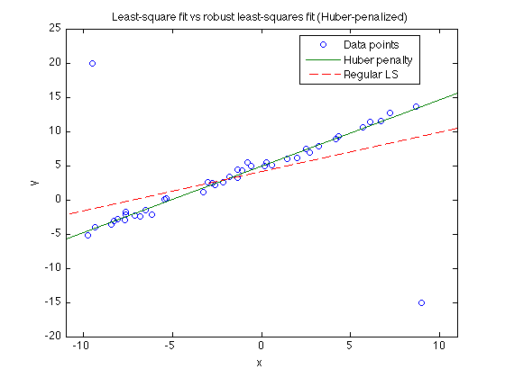

Example 6.2: Robust regression using the Huber penalty
randn('seed',1);
rand('seed',1);
m=40; n=2; A = randn(m,n);
xex = [5;1];
pts = -10+20*rand(m,1);
A = [ones(m,1) pts];
b = A*xex + .5*randn(m,1);
outliers = [-9.5; 9]; outvals = [20; -15];
A = [A; ones(length(outliers),1), outliers];
b = [b; outvals];
m = size(A,1);
pts = [pts;outliers];
fprintf(1,'Computing the solution of the least-squares problem...');
xls = A\b;
fprintf(1,'Done! \n');
fprintf(1,'Computing the solution of the huber-penalized problem...');
cvx_begin quiet
variable xhub(n)
minimize(sum(huber(A*xhub-b)))
cvx_end
fprintf(1,'Done! \n');
figure(1); hold off
plot(pts,b,'o', [-11; 11], [1 -11; 1 11]*xhub, '-', ...
[-11; 11], [1 -11; 1 11]*xls, '--');
axis([-11 11 -20 25])
title('Least-square fit vs robust least-squares fit (Huber-penalized)');
xlabel('x');
ylabel('y');
legend('Data points','Huber penalty','Regular LS','Location','Best');
Computing the solution of the least-squares problem...Done!
Computing the solution of the huber-penalized problem...Done!
